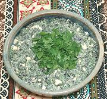

|
Egg & Herb SaladR. Georgia - Salati | ||||
| Makes: Effort: Sched: DoAhead: |
2/3 cups ** 30 min Yes |
Georgians are very big on fresh herbs, but here, sour cream betrays a Russian influence. This works very well dolloped onto simple crackers or squares of toast as an appetizer. | |||
|
1 1/2 4 1/3 1/8 |
lrg c T t t |
Egg Herbs, mixed (1) Sour Cream Salt Pepper black |
Make - (30 min)
|